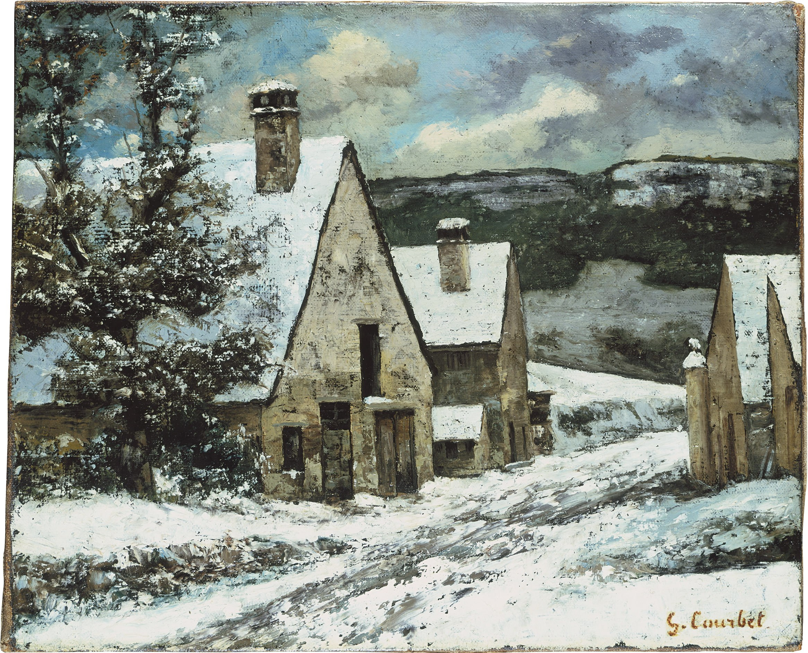

Жан Дезире Гюстав Курбе
Dorfausgang im Winter (Окраина деревни зимой), 1868

Холст, масло, 44,5 x 54 см
Штеделевский художественный институт, Франкфурт-на-Майне. Приобретено в 1906 году в качестве подарка от наследников Бенедикта Гольдшмидта.
Следуя по диагонали, взгляд зрителя проходит мимо, по-видимому, заброшенных домов в скудной, зимней сцене. Здесь вид резко обрывается и упирается в высокий скальный массив. На картине изображены горы Юра, где расположен родной город Гюстава Курбе - Орнан. Суровость ландшафта подчёркивается нанесением краски техникой импасто; средство изображения подчёркивается больше, чем образное содержание. Как художник-пейзажист, Курбе был важным образцом для подражания для импрессионистов. Он и Клод Моне познакомились в 1862 году, а в 1870 году Курбе был шафером на свадьбе Моне.
Источник: https://www.staedelmuseum.de/go/ds/1406